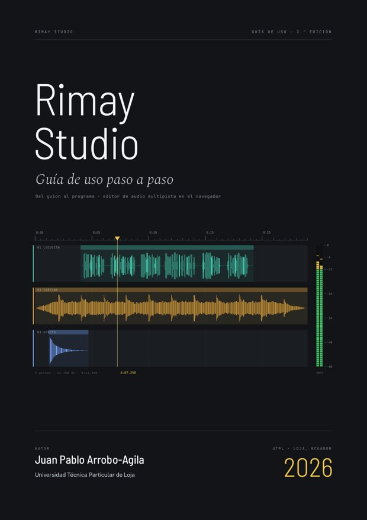

Guía de uso paso a paso · gratuita
Rimay Studio
rimay · «hablar», «la palabra» en kichwa
Del guion al programa terminado.
Una guía para aprender a escribir el guion, grabar con el micrófono, editar, mezclar y exportar con Rimay Studio, el editor de audio multipista que funciona en el navegador. Pensada para estudiantes, docentes y cualquier persona que quiera producir radio y pódcast.

Qué contiene
11Capítulos con ejercicios
34Capturas reales anotadas
01Caso práctico: del guion al MP3
06Audios de práctica
- Primeros pasos: la pantalla, el idioma y el teclado
- Importar y organizar audios y pistas
- Escuchar y moverse por el proyecto
- Editar con las herramientas
- Grabar desde el micrófono
- Volumen y panorama sobre el clip
- Mezclar: niveles y medidores
- Efectos y favoritos
- Escribir y grabar el guion
- Guardar y exportar
- Caso práctico: una cápsula radial
- Anexos: atajos, glosario, solución de problemas y kit
Licencia y cita
Esta guía se distribuye bajo la licencia Creative Commons Atribución-NoComercial-CompartirIgual 4.0 Internacional.
- Puede copiarla, imprimirla, compartirla y adaptarla para la enseñanza y el aprendizaje.
- Debe citar al autor y la fuente, e indicar si hizo cambios.
- No puede venderla ni usarla con fines comerciales; las adaptaciones se comparten con la misma licencia.
Arrobo-Agila, J. P. (2026). Guía de uso de Rimay Studio: Editor de audio multipista en el navegador (2.ª ed.). Universidad Técnica Particular de Loja. https://juanp4105.github.io/audiolab-studio/guia/